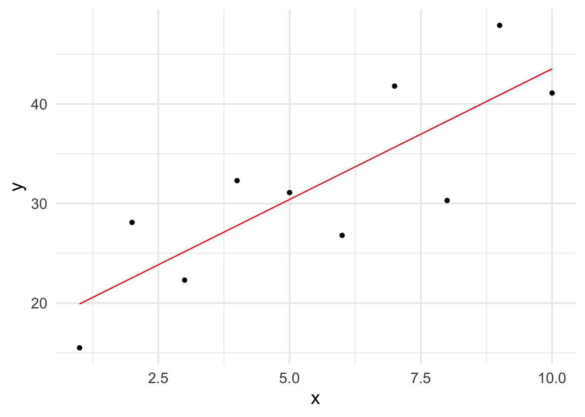
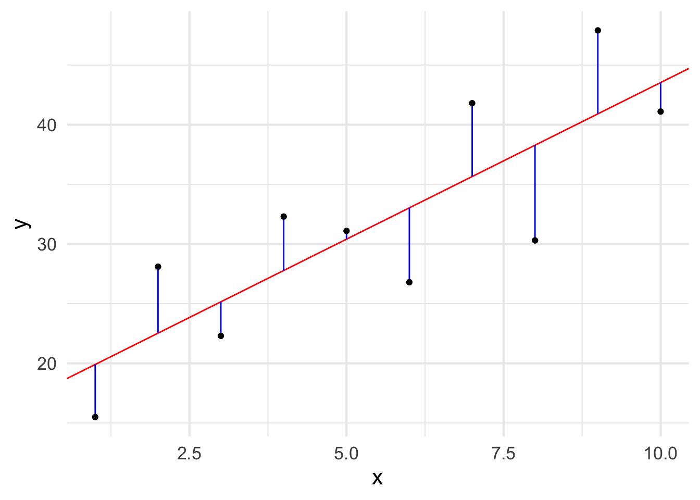
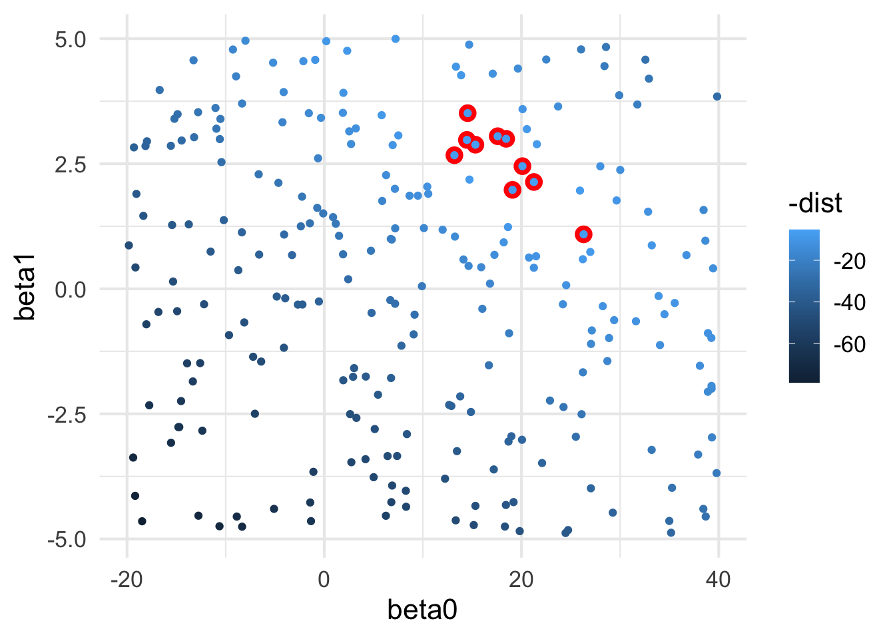
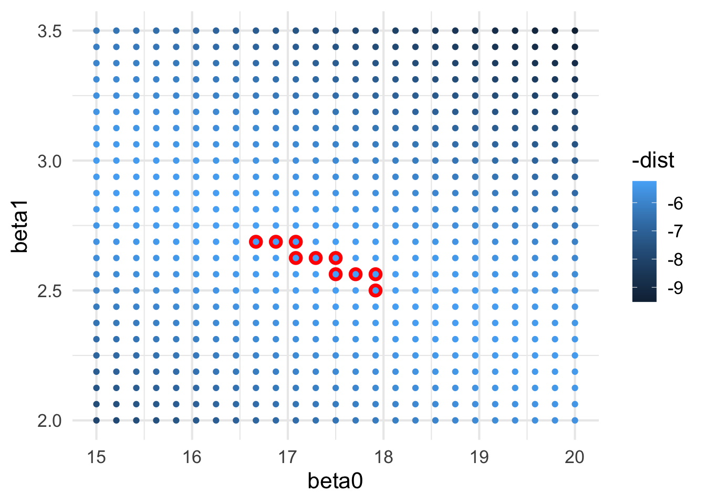
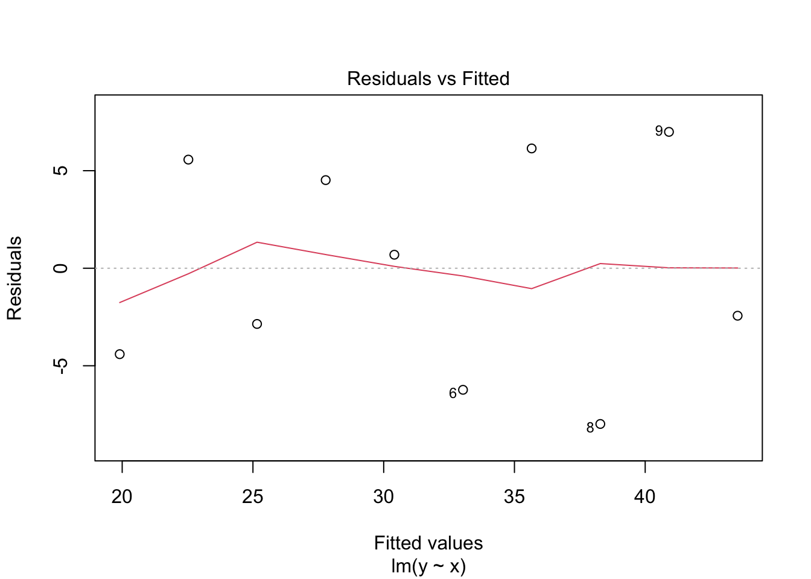
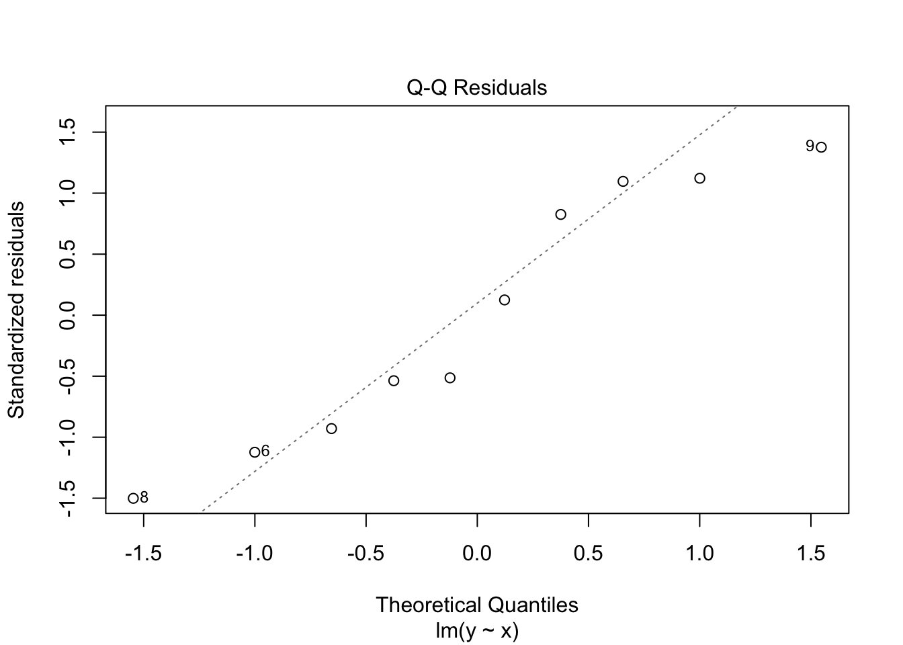
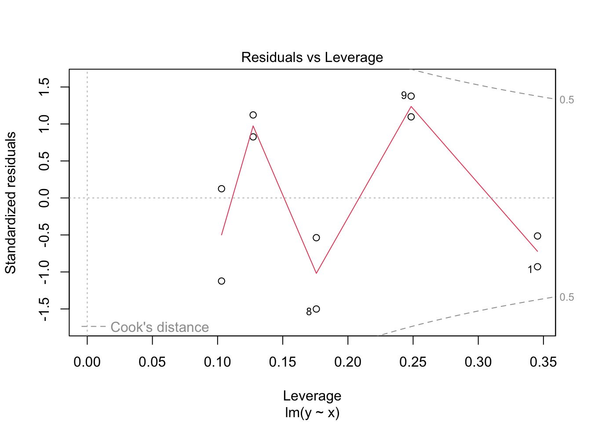

In that some of the underlying variation goes towards explaining the patterns in the data and the rest of the variation is residual (or left over). For regression analyses, consider the simple linear regression model.
Where th terms \(\beta_0\) is the where the expected line interscepts the y-axis when \(x = 0\), the coefficient \(\beta_1\) is the rate at which the \(y\) (the results) changes per unit change in \(x\) (the predictor, and \(\epsilon\) is the left over variation (residual) that each point has.
The null hypothesis for this kind of regression model is
\(H_O: \beta_1 = 0\)
We could have a hypothesis that \(\beta_0 = 0\) but that is often not that interesting of an idea since that is a constant term in the equation (n.b., we could subtract it out from both sides). If we have more than one predictor variable, the null hypothesis becomes \(H_O: \beta_i = 0; \forall i\) (that upside down triangle is ‘for all’).
Graphically, let us look at the following data as an example for basic regression models.
df <-data.frame( x =1:10,y =c( 15.5, 28.1, 22.3, 32.3, 31.1, 26.8, 41.8, 30.3, 47.9, 41.1) )ggplot( df, aes(x,y) ) +stat_smooth( method="lm", formula = y ~ x, se=FALSE, color="red", size=0.5) +geom_point()
Warning: Using `size` aesthetic for lines was deprecated in ggplot2 3.4.0.
ℹ Please use `linewidth` instead.

The notion here is to be estimate the underlying formula for that red line that describes the variation in the original values in how y changes systematically across measured values of x.
Least Squares Fitting
So how do we figure this out? One of the most common ways is to uses a methods called Least Squared Distance fitting. To describe this, consider a set of hypothetical random models with random values estimated for both the intercept (\(\beta_0\)) and slope (\(\beta_1\)) coefficients. These could be close to a good models or not.
A least squares fit is one that minimizes the distances of each point (in the y-axis) from the line created by the model. In the graph below, we can see this would be the distances (squared so we do not have positive and negative values) along the y-axis, between each point and the fitted line.
The “best model” here is one that minimizes the sum of squared distances distances.

Let’s look at those hypothetical models. I’m going to make a few little functions to help make the code look easy.
First, here is a function that returns the distances between the original points and a hypothesized regression line defined by an interscept and slope from the original points.
model_distance <-function( interscept, slope, X, Y ) { yhat <- interscept + slope * X diff <- Y - yhatreturn( sqrt( mean( diff ^2 ) ) )}
Now, let’s go through all the models and estimate the mean squared distances between the proposed line (from intercept and slope) and the original data.
These models in the parameter space of intercepts and slopes can be visualized as this. These red-circles are close to where the best models are located.
ggplot( models, aes(x = beta0, y = beta1,color =-dist)) +geom_point( data =filter( models, rank(dist) <=10), color ="red",size =4) +geom_point()

In addition to a random search, we can be a bit more systematic about it and make a grid of interscept and slope values, using a grid search.
grid <-expand.grid( beta0 =seq(15,20, length =25),beta1 =seq(2, 3.5, length =25))grid$dist <-NAfor( i in1:nrow(grid) ) { grid$dist[i] <-model_distance( grid$beta0[i], grid$beta1[i], df$x, df$y )}ggplot( grid, aes(x = beta0, y = beta1,color =-dist)) +geom_point( data =filter( grid, rank(dist) <=10), color ="red",size =4) +geom_point()

You could imagine that we could iteratively soom in this grid and find the best fit combination of \(\beta_0\) and \(\beta_1\) values until we converged on a really well fit set.
There is a more direct way to get to these results (though is much less pretty to look at) using the lm() linear models function.
Our Friend lm()
To specify a potential model, we need to get the function the form we are interested in using.
fit <-lm( y ~ x, data = df )fit
Call:
lm(formula = y ~ x, data = df)
Coefficients:
(Intercept) x
17.280 2.625
We can see that for the values of the coefficients (labeled Interscept and x), it has a model_distance() of
model_distance( -1.76, 3.385, df$x, df$y )
[1] 15.90948
which we can see is pretty close in terms of the coefficients and has a smaller model distance than those examined in the grid.
grid %>%arrange( dist ) %>%head( n =1)
beta0 beta1 dist
1 17.29167 2.625 5.240071
Fortunately, we have a lot of additional information available to us because we used the lm() function.
Model Fit
We can estimate a bunch of different models but before we look to see if it well behaved. There are several interesting plots that we can examine from the model object such as:
plot( fit, which =1 )

plot( fit, which =2 )

plot( fit, which =5 )

Analysis of Variance Tables - Decomposing Variation
Thus far, we’ve been able to estiamte a model, but is it one that explains a significant amount of variation? To determine this, we use the analysis of variance table.
anova( fit )
Analysis of Variance Table
Response: y
Df Sum Sq Mean Sq F value Pr(>F)
x 1 568.67 568.67 16.568 0.003581 **
Residuals 8 274.58 34.32
---
Signif. codes: 0 '***' 0.001 '**' 0.01 '*' 0.05 '.' 0.1 ' ' 1
The terms in this table are:
Degrees of Freedom (df): representing 1 degree of freedom for the model, and N-1 for the residuals.
Sums of Squared Deviations:
\(SS_{Total} = \sum_{i=1}^N (y_i - \bar{y})^2\)
\(SS_{Model} = \sum_{i=1}^N (\hat{y}_i - \bar{y})^2\), and
\(SS_{Residual} = SS_{Total} - SS_{Model}\)
Mean Squares (Standardization of the Sums of Squares for the degrees of freedom)
The \(F\)-statistic is from a known distribution and is defined by the ratio of Mean Squared values.
Pr(>F) is the probability associated the value of the \(F\)-statistic and is dependent upon the degrees of freedom for the model and residuals.
Variance Explained
There is a correlative measurement in regression models to the Pearson Product Moment Coefficient, (\(\rho\)) in a statistic called \(R^2\). This parameter tells you, How much of the observed variation in y is explained by the model?
The equation for R^2 is:
\[
R^2 = \frac{SS_{Model}}{SS_{Total}}
\]
The value of this parameter is bound by 0 (the model explains no variation) and 1.0 (the model explains all the variation in the data). We can get to this and a few other parameters in the regression model by taking its summary.
summary( fit )
Call:
lm(formula = y ~ x, data = df)
Residuals:
Min 1Q Median 3Q Max
-7.9836 -4.0182 -0.8709 5.3064 6.9909
Coefficients:
Estimate Std. Error t value Pr(>|t|)
(Intercept) 17.280 4.002 4.318 0.00255 **
x 2.626 0.645 4.070 0.00358 **
---
Signif. codes: 0 '***' 0.001 '**' 0.01 '*' 0.05 '.' 0.1 ' ' 1
Residual standard error: 5.859 on 8 degrees of freedom
Multiple R-squared: 0.6744, Adjusted R-squared: 0.6337
F-statistic: 16.57 on 1 and 8 DF, p-value: 0.003581
Just like the model itself, the summary.lm object also has all these data contained within it in case you need to access them in textual format or to annotate graphical output.
Notice that the p-value is not in this list… It is estimable from the fstatistic and df values and here is a quick function that returns the raw p-value by looking up the are under the curve equal to or greater than the observed fstatistic with those degrees of freedom.
get_pval <-function( model ) { f <-summary( model )$fstatistic[1] df1 <-summary( model )$fstatistic[2] df2 <-summary( model )$fstatistic[3] p <-as.numeric( 1.0-pf( f, df1, df2 ) )return( p )}get_pval( fit )
[1] 0.0035813
As an often-overlooked side effect, the \(R^2\) from a simple one predictor regression model and the correlation coefficient \(r\) from cor.test(method='pearson') are related as follows:
We almost always need to look at the residuals of a regression model to help diagnose any potential problems (as shown above in the plots of the raw model itself).
OK, so we have a model that appears to suggest that the predicted values in x can explain the variation observed in y. Great. But, is this the best model or only one that is sufficiently meh such that we can reject the null hypothesis. How can we tell?
There are two parameters that we have already looked at that may help. These are:
The P-value: Models with smaller probabilities could be considered more informative.
The \(R^2\): Models that explain more of the variation may be considered more informative.
Let’s start by looking at some airquality data we have played with previously when working on data.frame objects.
Analysis of Variance Table
Response: Ozone
Df Sum Sq Mean Sq F value Pr(>F)
Solar.R 1 14780 14779.7 15.053 0.0001793 ***
Residuals 109 107022 981.9
---
Signif. codes: 0 '***' 0.001 '**' 0.01 '*' 0.05 '.' 0.1 ' ' 1
Let’s look at all the predictors and take a look at both the p-value and R-squared.
fit.temp <-lm( Ozone ~ Temp, data = df.air )fit.wind <-lm( Ozone ~ Wind, data = df.air )data.frame( Model =c( "Ozone ~ Solar","Ozone ~ Temp","Ozone ~ Wind"), R2 =c( summary( fit.solar )$r.squared,summary( fit.temp )$r.squared,summary( fit.wind )$r.squared ), P =c( get_pval( fit.solar), get_pval( fit.temp ),get_pval( fit.wind ) ) ) -> df.modelsdf.models %>%arrange( -R2 ) %>%mutate( P =format( P, scientific=TRUE, digits=3)) %>%kable( caption ="Model parameters predicting mean ozone in parts per billion mresured in New York during the period of 1 May 2973 - 30 September 2973.",digits =3) %>%kable_minimal()
Model parameters predicting mean ozone in parts per billion mresured in New York during the period of 1 May 2973 - 30 September 2973.
Model
R2
P
Ozone ~ Temp
0.488
0.00e+00
Ozone ~ Wind
0.362
9.27e-13
Ozone ~ Solar
0.121
1.79e-04
So if we look at these results, we see that in both \(R^2\) and \(P\), the model with Temp seems to be most explanatory as well as having the lowest probability. But is is significantly better?
How about if we start adding more than one variable to the equation so that we now have two variables (multiple regression) with the general model specified as:
df.models <-rbind( df.models, data.frame( Model =c( "Ozone ~ Temp + Wind","Ozone ~ Temp + Solar","Ozone ~ Wind + Solar" ),R2 =c( summary( fit.temp.wind )$r.squared,summary( fit.temp.solar )$r.squared,summary( fit.wind.solar )$r.squared ),P =c( get_pval( fit.temp.wind),get_pval( fit.temp.solar),get_pval( fit.wind.solar) ) ))df.models %>%mutate( P =format( P, scientific=TRUE, digits=3)) %>%kable( caption ="Model parameters predicting mean ozone in parts per billion mresured in New York during the period of 1 May 2973 - 30 September 2973.",digits =3) %>%kable_minimal()
Model parameters predicting mean ozone in parts per billion mresured in New York during the period of 1 May 2973 - 30 September 2973.
Model
R2
P
Ozone ~ Solar
0.121
1.79e-04
Ozone ~ Temp
0.488
0.00e+00
Ozone ~ Wind
0.362
9.27e-13
Ozone ~ Temp + Wind
0.569
0.00e+00
Ozone ~ Temp + Solar
0.510
0.00e+00
Ozone ~ Wind + Solar
0.449
9.99e-15
Hmmmmmm.
And for completeness, let’s just add the model that has all three predictors
df.models <-rbind( df.models, data.frame( Model =c( "Ozone ~ Temp + Wind + Solar"),R2 =c( summary( fit.all )$r.squared ),P =c( get_pval( fit.all) ) ))df.models$P =cell_spec( format( df.models$P, digits=3, scientific=TRUE), color =ifelse( df.models$P ==min(df.models$P), "red","black"))df.models$R2 =cell_spec( format( df.models$R2, digits=3, scientific=TRUE), color =ifelse( df.models$R2 ==max( df.models$R2), "green","black"))df.models %>%mutate( P =format( P, digits=3, scientific =TRUE) ) %>%kable( caption ="Model parameters predicting mean ozone in parts per billion mresured in New York during the period of 1 May 2973 - 30 September 2973. Values in green indicate the model with the largest variance explained and those in red indicate models with the lowest probability.",escape =FALSE) %>%kable_paper( "striped", full_width =FALSE )
Model parameters predicting mean ozone in parts per billion mresured in New York during the period of 1 May 2973 - 30 September 2973. Values in green indicate the model with the largest variance explained and those in red indicate models with the lowest probability.
Model
R2
P
Ozone ~ Solar
<span style=" color: black !important;" >1.21e-01</span>
<span style=" color: black !important;" >1.79e-04</span>
Ozone ~ Temp
<span style=" color: black !important;" >4.88e-01</span>
<span style=" color: red !important;" >0.00e+00</span>
Ozone ~ Wind
<span style=" color: black !important;" >3.62e-01</span>
<span style=" color: black !important;" >9.27e-13</span>
Ozone ~ Temp + Wind
<span style=" color: black !important;" >5.69e-01</span>
<span style=" color: red !important;" >0.00e+00</span>
Ozone ~ Temp + Solar
<span style=" color: black !important;" >5.10e-01</span>
<span style=" color: red !important;" >0.00e+00</span>
Ozone ~ Wind + Solar
<span style=" color: black !important;" >4.49e-01</span>
<span style=" color: black !important;" >9.99e-15</span>
Ozone ~ Temp + Wind + Solar
<span style=" color: green !important;" >6.06e-01</span>
<span style=" color: red !important;" >0.00e+00</span>
So how do we figure out which one is best?
Effects of Adding Parameters
Before we can answer this, we should be clear about one thing. We are getting more variance explained by adding more predictor variables. In fact, by adding any variable, whether they are informative or not, one can explain some amount of the Sums of Squares in a model. Taken to the extreme, this means that we could add an infinite number of explanatory variables to a model and explain all the variation there is!
Here is an example using our small data set. I’m going to make several models, one of which is the original one and the remaining add one more predeictor varible that is made up of a random variables. We will then look at the \(R^2\) of each of these models.
random.models <-list()random.models[["Ozone ~ Temp"]] <- fit.temprandom.models[["Ozone ~ Wind"]] <- fit.windrandom.models[["Ozone ~ Solar"]] <- fit.solarrandom.models[["Ozone ~ Temp + Wind"]] <- fit.temp.windrandom.models[["Ozone ~ Temp + Solar"]] <- fit.temp.solarrandom.models[["Ozone ~ Wind + Solar"]] <- fit.wind.solarrandom.models[[ "Ozone ~ Temp + Wind + Solar" ]] <- fit.alldf.tmp <- df.airfor( i in1:8 ) { lbl <-paste("Ozone ~ Temp + Wind + Solar + ", i, " Random Variables", sep="") df.tmp[[lbl]] <-rnorm( nrow(df.tmp) ) random.models[[lbl]] <-lm( Ozone ~ ., data = df.tmp ) }data.frame( Models =names( random.models ),R2 =sapply( random.models, FUN =function( x ) return( summary( x )$r.squared), simplify =TRUE ),P =sapply( random.models, FUN = get_pval ) ) -> df.randomdf.random %>%kable( caption ="Fraction of variation explained by original variable as well as models with incrementally more predictor variables made up of randomly derived data.",digits=4,row.names =FALSE ) %>%kable_paper("striped", full_width =FALSE )
Fraction of variation explained by original variable as well as models with incrementally more predictor variables made up of randomly derived data.
Models
R2
P
Ozone ~ Temp
0.4877
0e+00
Ozone ~ Wind
0.3619
0e+00
Ozone ~ Solar
0.1213
2e-04
Ozone ~ Temp + Wind
0.5687
0e+00
Ozone ~ Temp + Solar
0.5103
0e+00
Ozone ~ Wind + Solar
0.4495
0e+00
Ozone ~ Temp + Wind + Solar
0.6059
0e+00
Ozone ~ Temp + Wind + Solar + 1 Random Variables
0.6268
0e+00
Ozone ~ Temp + Wind + Solar + 2 Random Variables
0.6305
0e+00
Ozone ~ Temp + Wind + Solar + 3 Random Variables
0.6305
0e+00
Ozone ~ Temp + Wind + Solar + 4 Random Variables
0.6308
0e+00
Ozone ~ Temp + Wind + Solar + 5 Random Variables
0.6442
0e+00
Ozone ~ Temp + Wind + Solar + 6 Random Variables
0.6443
0e+00
Ozone ~ Temp + Wind + Solar + 7 Random Variables
0.6462
0e+00
Ozone ~ Temp + Wind + Solar + 8 Random Variables
0.6494
0e+00
So if we just add random data to a model, we get a better fit!!!! Sounds great. That is easy! I can always get the best fit there is!
This is a well-known situation in statistics. An in fact, we must be very careful when we are examining the differences between models and attempting to decide which set of models are actually better than other sets of models.
Model Fitting
To get around this, we have a few tools at our disposal. The most common approach is to look at the information content in each model relative to the amount of pedictor variables. In essence, we must punish ourselves for adding more predictors so that we do not all run around and add random data to our models. The most common one is called Akaike Information Criterion (AIC), and provide a general framework for comparing several models.
\[
AIC = -2 \ln L + 2p
\]
Where \(L\) is the log likelihood estimate of the variance and \(p\) is the number of parameters. What this does is allow you to evaluate different models with different subsets of parameters. In general, the best model is the one with the smallest value for AIC.
We can also evaluate the relative values of all the models by looking in the difference between the “best” model and the rest by taking the difference
\[
\delta AIC = AIC - min(AIC)
\]
The prevailing notion is that models that have \(\delta AIC < 2.0\) should be considered as almost equally informative, where as those whose \(\delta AIC > 5.0\) are to be rejected as being informative. That \(2.0 \le \delta AIC \le 5.0\) range is where it gets a bit fuzzy.
df.random$AIC <-sapply( random.models, FUN = AIC, simplify =TRUE )df.random$deltaAIC = df.random$AIC -min( df.random$A)df.random %>%select( -P ) %>%kable( caption ="Model parameters predicting mean ozone in parts per billion mresured in New York during the period of 1 May 2973 - 30 September 2973 with variance explained, AIC, and ∂AIC for alternative models.",escape =FALSE,row.names =FALSE, digits =3) %>%kable_paper( "striped", full_width =FALSE )
Model parameters predicting mean ozone in parts per billion mresured in New York during the period of 1 May 2973 - 30 September 2973 with variance explained, AIC, and ∂AIC for alternative models.
Models
R2
AIC
deltaAIC
Ozone ~ Temp
0.488
1067.706
73.039
Ozone ~ Wind
0.362
1093.187
98.520
Ozone ~ Solar
0.121
1083.714
89.047
Ozone ~ Temp + Wind
0.569
1049.741
55.074
Ozone ~ Temp + Solar
0.510
1020.820
26.152
Ozone ~ Wind + Solar
0.449
1033.816
39.148
Ozone ~ Temp + Wind + Solar
0.606
998.717
4.050
Ozone ~ Temp + Wind + Solar + 1 Random Variables
0.627
994.667
0.000
Ozone ~ Temp + Wind + Solar + 2 Random Variables
0.631
995.546
0.879
Ozone ~ Temp + Wind + Solar + 3 Random Variables
0.631
997.546
2.879
Ozone ~ Temp + Wind + Solar + 4 Random Variables
0.631
999.472
4.805
Ozone ~ Temp + Wind + Solar + 5 Random Variables
0.644
997.378
2.711
Ozone ~ Temp + Wind + Solar + 6 Random Variables
0.644
999.341
4.674
Ozone ~ Temp + Wind + Solar + 7 Random Variables
0.646
1000.734
6.067
Ozone ~ Temp + Wind + Solar + 8 Random Variables
0.649
1001.726
7.059
So as we look at the data here, we see that the best fit model is the full model though others may be considered as informative and this is where we need to look at the biological importance of variables added to the models.